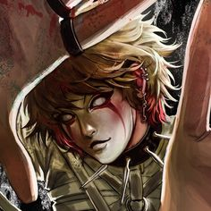
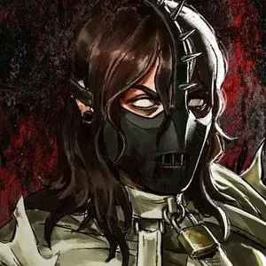
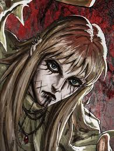
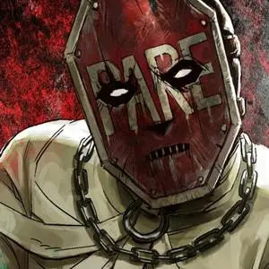
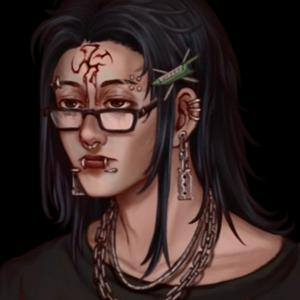

Franco foi convidado para a banda após Cindy encontrar ele por meio de vídeos tocando guitarra que ele postava na internet. Ele esteve presente no show para a realização do tributo no The Monica Club, atuando como o guitarrista e sendo responsável pela parte pirotécnica do show.

Cindy
Pouco se sabe sobre o passado de Cindy Lopes, apenas que junto de Alê, Eloy, Franco e Andrei Colfas, até então namorado da mesma, formaram os PSIKOLERA, cujo ela é a baixista e líder.
Durante os eventos de Hexatombe, sabe-se que Cindy assumiu o papel de líder da sua equipe.

Eloy
Em algum ponto de sua vida, Eloy fundou a banda dos PSIKOLERA junto de Andrei Colfas, convidando depois Alê, Cindy Lopes e Franco. O mesmo tem a função de baterista.
Durante o Hexatombe ele e a banda foram vistos tocando no show do The Monica Club onde a equipe realizou seu tributo e abriram o portal.

Alê
Não se sabe detalhes sobre a história de Alê, apenas que elu estava junto na formação da banda exercendo a função de tecladista. Alê também esteve presente no show para a realização do tributo no The Monica Club, que resultou na abertura do portal para o Hexatombe.
No Hexatombe ficou recluso dentro da base dos PSIKOLERA.

Caio
Caio Teles é o atual substituto do vocalista da banda e equipe PSIKOLERA, recebendo esse cargo após o falecimento do antigo vocalista Andrei Colfas.
Dentro do Hexatombe, Caio também ficou responsável ir atrás de recursos e explorar o ambiente.

Caito
Caíto é um jovem rapaz que estava desaparecido de acordo com um cartaz com seu rosto estampado avistado no parede de um beco.
Durante o Hexatombe, Caíto assume o papel de Sacrifício da equipe. Ele se demonstrou bem arrogante e prepotente.